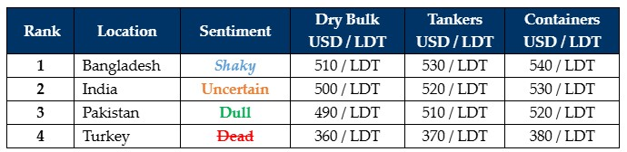

inWeekly Demolition Reports22/07/2024

Indian sub-continent ship recycling markets remain decidedly dicey as both currencies and local steel plate prices in India& Bangladesh declined even further this week, and vessel prices and demand take on a whole new meaning of industrywide suffering, especially with Turkey and Pakistani ship recycling markets still being remanded at the same resort over recent weeks.
And with the way things are going in the Middle East, the situation in August (likely even leading into September) seems destined to keep things depressed over the short-term in the ship recycling sector, in that, not only are the Houthis turning increasingly brazen and are now conducting direct aerial raids inside Israel (with the recent drone bomb that detonated over Tel Aviv killing at least one and wounding several more), but the IDF also quickly counter-engaged Houthi targets in the port city of Al Hudaydah in Western Yemen, where the source of the drone strike is thought to have originated from. This back-and-forth is destined to metastasize an already fragile restraint between Israel and its enemies in the region and is further setting the stage for an imminent escalation in the severity of ongoing attacks – before the situation gets any better. This will also continue to restrict the supply of vessels for the immediate future / likely until Q4 ’24, and this will invariably assist the ongoing & admirable performance of freight rates across key sectors, even in the face of traditional summer slowdowns.
On the macro end of the markets this week, ongoing student riots in Bangladesh have increased in severity, resulting in a rising death toll and increasing mobile & internet outages across major cities that are now affecting key financial hubs and increasing the disability of this market to conduct regular business. India on the other side is clearly highlighting a market in retreat on the back of a tumultuous General Election outcome and all eyes remain peeled on the upcoming budget due to be announced July 23rd, which increasingly seems to be a negative one, especially given the recent performance of key domestic fundamentals.
Should India’s budget turn out to be negative, Ship Owners & Cash Buyers with tonnage intended for Alang will find themselves chasing a market that’s snapped a stiletto, while simultaneously creating surprising news of high-priced fixtures that seem destined to lose money at the time of delivery. The focus therefore seems to be falling on an already damp Pakistani market, where prices, though below USD 500s/LDT, seem to be safe choice for non-HKC tonnage. HKC tonnage will sadly have to bite the bullet for India as Turkey receives a double tap this week.
For week 29 of 2024, GMS demo rankings / pricing for the week are as below.

📄 Download PDF: Ship-recycling-market-insight-Week-29-7-19-2024-Decidedly_Dicey.pdfSource: GMS,Inc.https://www.gmsinc.net/gms_new/index.php/web